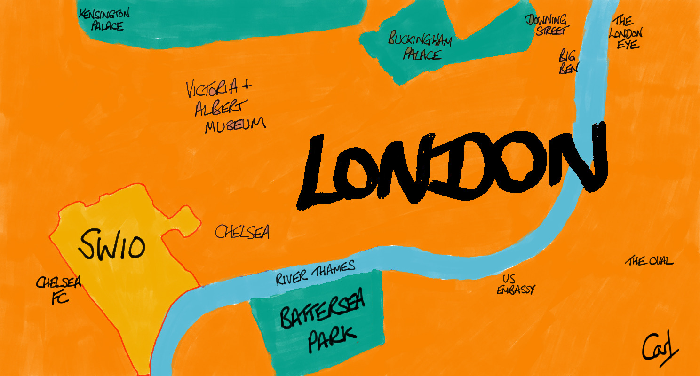
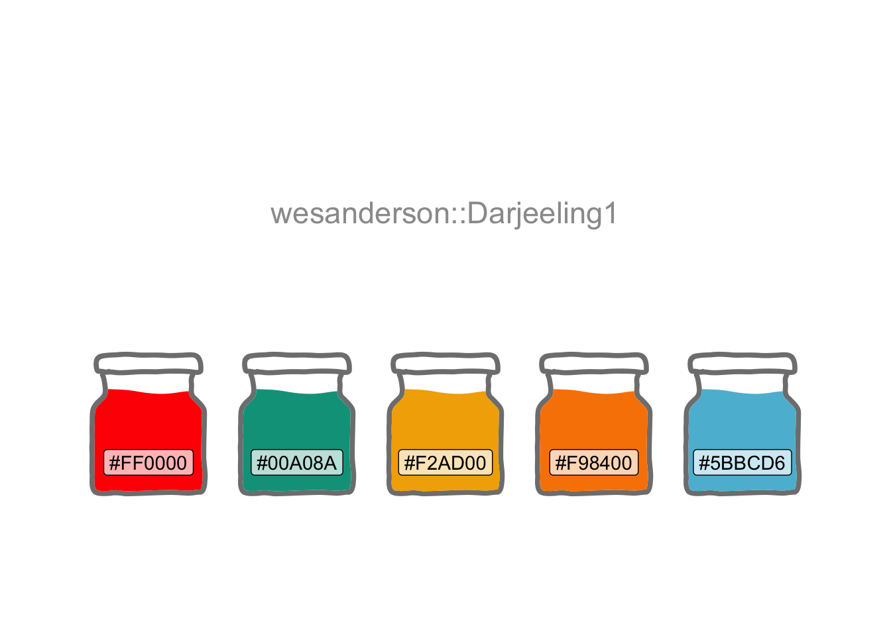
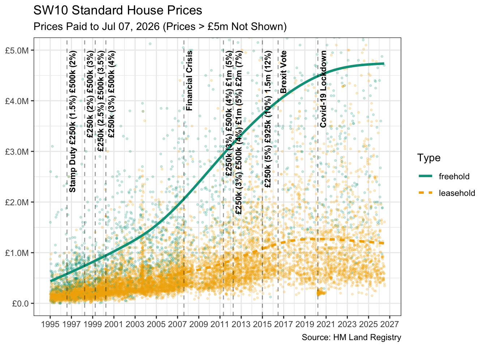
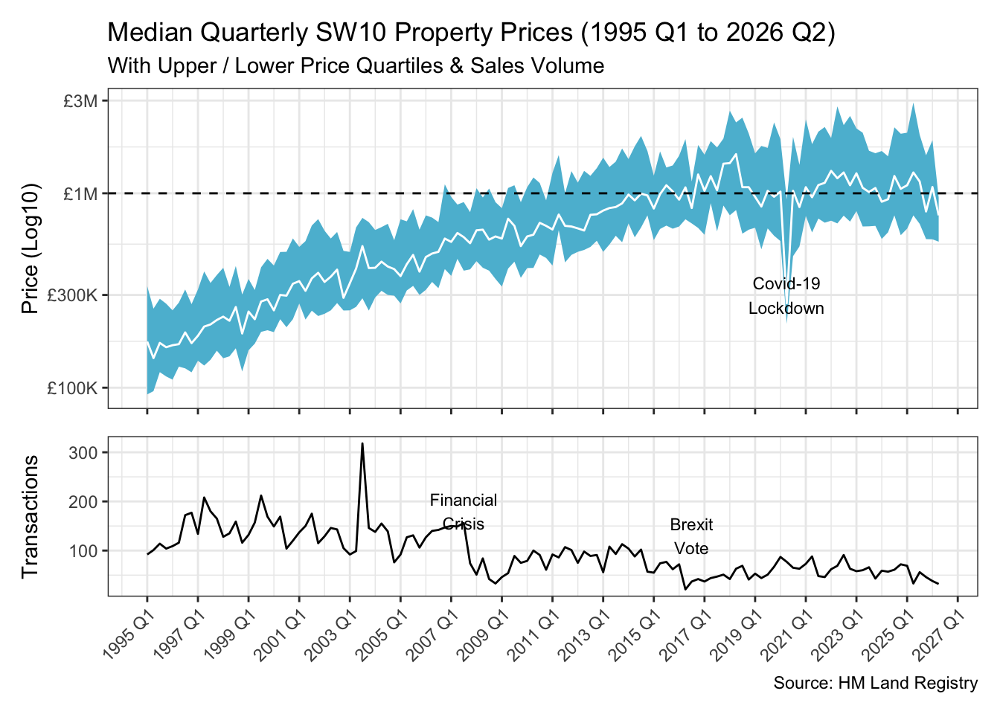
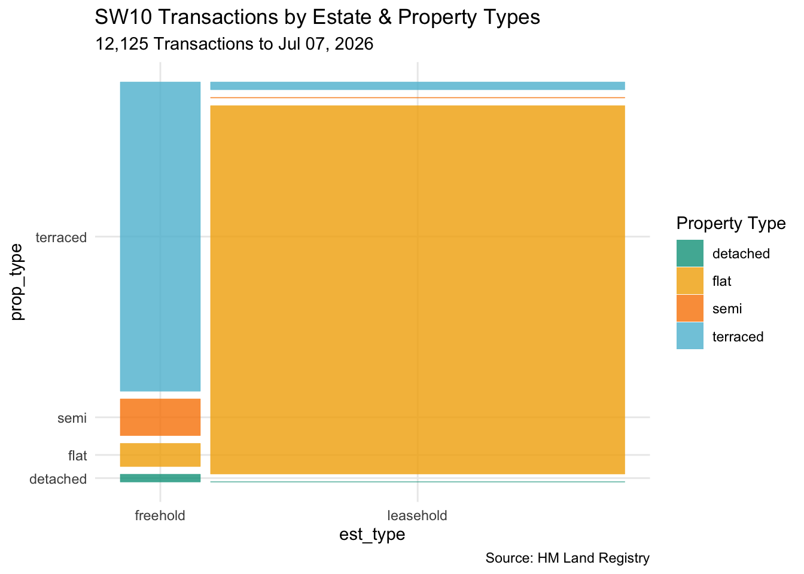

library(conflicted)
library(tidyverse)
conflict_prefer_all("dplyr", quiet = TRUE)
conflict_prefer("as_date", "lubridate")
library(scales)
library(SPARQL)
library(clock)
conflict_prefer("date_format", "clock")
library(glue)
library(tsibble)
library(patchwork)
library(ggmosaic)
library(ggfoundry)
library(paletteer)
library(usedthese)
conflict_scout()House Sales
R
time series
A series of events, such as the Financial Crisis and the 2016 Brexit vote, that damped down residential property sales in London

Various events have impacted house sales in London. There has been a series of increases in stamp duty and the impact of the financial crisis. More recently Brexit and the consequences of Covid-19.
How is London postal area SW10 coping with all this?
theme_set(theme_bw())
pal_name <- "wesanderson::Darjeeling1"
pal <- paletteer_d(pal_name)
display_palette(pal, pal_name)
House prices paid data are provided by HM Land Registry Open Data.
endpoint <- "https://landregistry.data.gov.uk/landregistry/query"
query <- 'PREFIX text: <http://jena.apache.org/text#>
PREFIX ppd: <http://landregistry.data.gov.uk/def/ppi/>
PREFIX lrcommon: <http://landregistry.data.gov.uk/def/common/>
SELECT ?item ?ppd_propertyAddress ?ppd_hasTransaction ?ppd_pricePaid ?ppd_transactionCategory ?ppd_transactionDate ?ppd_transactionId ?ppd_estateType ?ppd_newBuild ?ppd_propertyAddressCounty ?ppd_propertyAddressDistrict ?ppd_propertyAddressLocality ?ppd_propertyAddressPaon ?ppd_propertyAddressPostcode ?ppd_propertyAddressSaon ?ppd_propertyAddressStreet ?ppd_propertyAddressTown ?ppd_propertyType ?ppd_recordStatus
WHERE
{ ?ppd_propertyAddress text:query _:b0 .
_:b0 <http://www.w3.org/1999/02/22-rdf-syntax-ns#first> lrcommon:postcode .
_:b0 <http://www.w3.org/1999/02/22-rdf-syntax-ns#rest> _:b1 .
_:b1 <http://www.w3.org/1999/02/22-rdf-syntax-ns#first> "( SW10 )" .
_:b1 <http://www.w3.org/1999/02/22-rdf-syntax-ns#rest> _:b2 .
_:b2 <http://www.w3.org/1999/02/22-rdf-syntax-ns#first> 3000000 .
_:b2 <http://www.w3.org/1999/02/22-rdf-syntax-ns#rest> <http://www.w3.org/1999/02/22-rdf-syntax-ns#nil> .
?item ppd:propertyAddress ?ppd_propertyAddress .
?item ppd:hasTransaction ?ppd_hasTransaction .
?item ppd:pricePaid ?ppd_pricePaid .
?item ppd:transactionCategory ?ppd_transactionCategory .
?item ppd:transactionDate ?ppd_transactionDate .
?item ppd:transactionId ?ppd_transactionId
OPTIONAL { ?item ppd:estateType ?ppd_estateType }
OPTIONAL { ?item ppd:newBuild ?ppd_newBuild }
OPTIONAL { ?ppd_propertyAddress lrcommon:county ?ppd_propertyAddressCounty }
OPTIONAL { ?ppd_propertyAddress lrcommon:district ?ppd_propertyAddressDistrict }
OPTIONAL { ?ppd_propertyAddress lrcommon:locality ?ppd_propertyAddressLocality }
OPTIONAL { ?ppd_propertyAddress lrcommon:paon ?ppd_propertyAddressPaon }
OPTIONAL { ?ppd_propertyAddress lrcommon:postcode ?ppd_propertyAddressPostcode }
OPTIONAL { ?ppd_propertyAddress lrcommon:saon ?ppd_propertyAddressSaon }
OPTIONAL { ?ppd_propertyAddress lrcommon:street ?ppd_propertyAddressStreet }
OPTIONAL { ?ppd_propertyAddress lrcommon:town ?ppd_propertyAddressTown }
OPTIONAL { ?item ppd:propertyType ?ppd_propertyType }
OPTIONAL { ?item ppd:recordStatus ?ppd_recordStatus }
}'
data_lst <- SPARQL(endpoint, query)The focus is on the standard price paid.
data_df <- data_lst$results |>
as_tibble() |>
mutate(
trans_date = as_datetime(ppd_transactionDate) |> as_date(),
amount = ppd_pricePaid,
prop_type = str_extract(ppd_propertyType, "(?<=common/)[\\w]+"),
est_type = str_extract(ppd_estateType, "(?<=common/)[\\w]+"),
cat = str_remove(ppd_transactionCategory, "<http://landregistry.data.gov.uk/def/ppi/"),
prop_type = recode(prop_type, otherPropertyType = "Other")
) |>
filter(str_detect(cat, "standard"))A Telegraph article entitled Timeline: 20 years of stamp duty increases for home buyers pinpoints many of the key event dates.
events <- tribble(
~event_date, ~change,
"96-07-31", "Stamp Duty £250k (1.5%) £500k (2%)",
"98-03-31", "£250k (2%) £500k (3%)",
"99-03-31", "£250k (2.5%) £500k (3.5%)",
"00-03-31", "£250k (3%) £500k (4%)",
"11-04-30", "£250k (3%) £500k (4%) £1m (5%)",
"12-03-31", "£250k (3%) £500k (4%) £1m (5%) £2m (7%)",
"14-12-31", "£250k (5%) £925k (10%) 1.5m (12%)",
"07-08-09", "Financial Crisis",
"16-06-23", "Brexit Vote",
"20-03-23", "Covid-19 Lockdown"
) |>
mutate(event_date = date_parse(event_date, format = "%y-%m-%d"))
events |>
rename("Date" = event_date, "Event" = change)| Date | Event |
|---|---|
| 1996-07-31 | Stamp Duty £250k (1.5%) £500k (2%) |
| 1998-03-31 | £250k (2%) £500k (3%) |
| 1999-03-31 | £250k (2.5%) £500k (3.5%) |
| 2000-03-31 | £250k (3%) £500k (4%) |
| 2011-04-30 | £250k (3%) £500k (4%) £1m (5%) |
| 2012-03-31 | £250k (3%) £500k (4%) £1m (5%) £2m (7%) |
| 2014-12-31 | £250k (5%) £925k (10%) 1.5m (12%) |
| 2007-08-09 | Financial Crisis |
| 2016-06-23 | Brexit Vote |
| 2020-03-23 | Covid-19 Lockdown |
Visually, it appears that the financial crisis had a big impact on sales volume, with the Brexit vote sucking much of the remaining oxygen out of the market. Stamp duty increases in between probably slowed any intermediate recovery.
to_date <- data_df |>
summarise(max(trans_date)) |>
pull() |>
date_format(format = "%b %d, %Y")
data_df |>
ggplot(aes(trans_date, amount, colour = est_type)) +
geom_point(alpha = 0.2, size = 0.7, show.legend = FALSE) +
geom_smooth(se = FALSE, aes(linetype = est_type), size = 1.2) +
labs(
title = "SW10 Standard House Prices",
subtitle = glue("Prices Paid to {to_date} (Prices > £5m Not Shown)"
),
x = NULL,
y = NULL,
colour = "Type", linetype = "Type",
caption = "Source: HM Land Registry"
) +
geom_vline(xintercept = events$event_date,
size = 0.5, lty = 2, alpha = 0.4) +
annotate("text", events$event_date, 5000000,
angle = 90,
label = events$change, vjust = 1.4, hjust = 1, size = 3, fontface = 2
) +
coord_cartesian(ylim = c(0, 5000000)) +
scale_colour_manual(values = pal[c(2, 3)]) +
scale_x_date(date_breaks = "2 years", date_labels = "%Y") +
scale_y_continuous(labels = label_currency(accuracy = 0.1, prefix = "£",
scale_cut = cut_short_scale()))
An alternative way of looking at this is by median quarterly prices (with upper and lower quartiles), supplemented by sales volumes.
qtr_start <- date_today("Europe/London") |>
as_year_quarter_day() |>
calendar_start("quarter") |>
as_date()
qtile_df <-
data_df |>
filter(trans_date < qtr_start) |>
mutate(yr_qtr = yearquarter(trans_date)) |>
reframe(price = quantile(amount, c(0.25, 0.5, 0.75)),
quantile = c("lower", "median", "upper") |> factor(),
n = n(),
.by = yr_qtr) |>
pivot_wider(names_from = quantile, values_from = price)
last <- qtile_df |> summarise(max(yr_qtr)) |> pull()
first <- qtile_df |> summarise(min(yr_qtr)) |> pull()
p1 <- qtile_df |>
ggplot(aes(yr_qtr, median)) +
geom_ribbon(aes(ymin = lower, ymax = upper), fill = pal[5]) +
geom_line(colour = "white") +
geom_hline(yintercept = 1000000, linetype = "dashed") +
annotate("text", x = yearquarter("2020 Q2"), y = 300000,
label = "Covid-19\nLockdown", size = 3) +
scale_x_yearquarter(date_breaks = "2 years") +
scale_y_log10(labels = label_currency(prefix = "£",
scale_cut = cut_short_scale())) +
labs(
title = glue("Median Quarterly SW10 Property Prices ({first} to {last})"),
subtitle = "With Upper / Lower Price Quartiles & Sales Volume",
x = NULL, y = "Price (Log10)"
) +
theme(axis.text.x = element_blank())
p2 <- qtile_df |>
ggplot(aes(yr_qtr, n)) +
geom_line() +
annotate("text", x = yearquarter("2007 Q3"), y = 180,
label = "Financial\nCrisis", size = 3) +
annotate("text", x = yearquarter("2016 Q3"), y = 130,
label = "Brexit\nVote", size = 3) +
scale_x_yearquarter(date_breaks = "2 years") +
labs(x = NULL, y = "Transactions",
caption = "Source: HM Land Registry") +
theme(axis.text.x = element_text(angle = 45, hjust = 1))
p1 / p2 + plot_layout(heights = c(2, 1))
A ggmosaic (Jeppson et al. 2021) visualisation of the composition of SW10 reveals the postal area to be overwhelmingly dominated by leasehold flats.
num_trans <- data_df |> nrow()
data_df |>
ggplot() +
geom_mosaic(aes(product(prop_type, est_type), fill = prop_type),
offset = 0.02, divider = mosaic("h")) +
scale_fill_manual(values = pal[c(2:5)]) +
labs(
title = "SW10 Transactions by Estate & Property Types",
subtitle = glue("{comma(num_trans)} Transactions to {to_date}"),
x = "", y = "", fill = "Property Type",
caption = "Source: HM Land Registry"
) +
theme_minimal()
Other blog posts on quantum jitter look at SW10 property from different perspectives: Digging Deep considers the correlation between house sales and planning applications; and Bootstraps & Bandings uses a sample of recent house sales to infer whether property bands are as representative of property values today as they were three decades ago.
R Toolbox
Summarising below the packages and functions used in this post enables me to separately create a toolbox visualisation summarising the usage of packages and functions across all posts.
used_here()| Package | Function |
|---|---|
| SPARQL | SPARQL[1] |
| base | c[6], factor[1], library[12], max[2], min[1], nrow[1] |
| clock | as_year_quarter_day[1], calendar_start[1], date_format[1], date_parse[1], date_today[1] |
| conflicted | conflict_prefer[2], conflict_prefer_all[1], conflict_scout[1] |
| dplyr | filter[2], mutate[3], n[1], pull[3], recode[1], reframe[1], rename[1], summarise[3] |
| ggfoundry | display_palette[1] |
| ggmosaic | geom_mosaic[1], mosaic[1], product[1] |
| ggplot2 | aes[6], annotate[4], coord_cartesian[1], element_blank[1], element_text[1], geom_hline[1], geom_line[2], geom_point[1], geom_ribbon[1], geom_smooth[1], geom_vline[1], ggplot[4], labs[4], scale_colour_manual[1], scale_fill_manual[1], scale_x_date[1], scale_y_continuous[1], scale_y_log10[1], theme[2], theme_bw[1], theme_minimal[1], theme_set[1] |
| glue | glue[3] |
| lubridate | as_date[2], as_datetime[1] |
| paletteer | paletteer_d[1] |
| patchwork | plot_layout[1] |
| scales | comma[1], cut_short_scale[2], label_currency[2] |
| stats | quantile[1] |
| stringr | str_detect[1], str_extract[2], str_remove[1] |
| tibble | as_tibble[1], tribble[1] |
| tidyr | pivot_wider[1] |
| tsibble | scale_x_yearquarter[2], yearquarter[4] |
| usedthese | used_here[1] |
References
Jeppson, Haley, Heike Hofmann, and Di Cook. 2021. Ggmosaic: Mosaic Plots in the ’Ggplot2’ Framework. https://CRAN.R-project.org/package=ggmosaic.